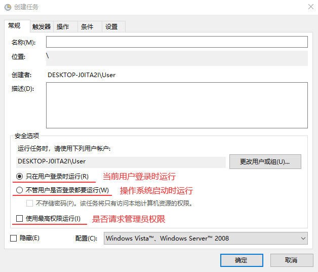
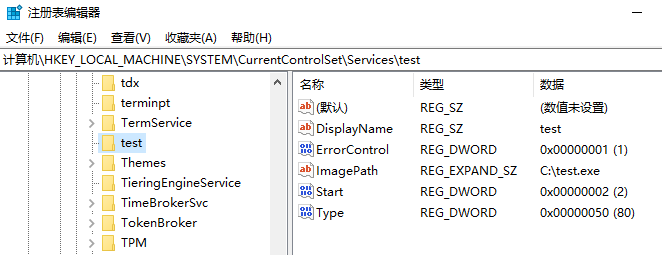

简介
在很多情况下，我们期望自己的程序，能够跟随操作系统运行。操作系统也提供了一些常规的
开机自启动的方法，比如特定的注册表和特定的文件夹等，下边依次进行介绍
工作原理
1.注册表RUN
系统在注册表中提供随着 用户登录 而运行的RUN键值，包含如下位置
1 | HKEY_LOCAL_MACHINE\SOFTWARE\Microsoft\Windows\CurrentVersion\Run |
1 | HKEY_CURRENT_USER\SOFTWARE\Microsoft\Windows\CurrentVersion\Run |
在 HKEY_LOCAL_MACHINE 里的是针对 所有用户 的配置，在 HKEY_CURRENT_USER 里的是
针对 当前用户 的配置，其中 RunOnce 的配置在启动过一次后就会自行删除
注：该方法涉及到 提升UAC权限 运行的程序会失败
2.文件夹启动
在系统开时菜单中提供了随着 用户登录 而运行的启动目录，包含如下位置
1 | C:\ProgramData\Microsoft\Windows\Start Menu\Programs\StartUp |
其中 ProgramData 目录下的是针对 所有用户 的配置
注：该方法涉及到 提升UAC权限 运行的程序会失败
3.注册表Userinit
在如下注册表的位置存在一个 Userinit 值，数据为 C:\Windows\system32\userinit.exe,
注意结尾的逗号，这里我们可以添加自己的程序，在 用户登录 时就会跟随一起启动
1 | HKEY_LOCAL_MACHINE\SOFTWARE\Microsoft\Windows NT\CurrentVersion\Winlogon |
注：该方法涉及到 提升UAC权限 运行的程序会失败
3.计划任务
在操作系统计划任务配置中，可以设置是 用户登录 时运行，还是 系统启动 时运行，
同时还可以设置是否以 管理员权限 运行，如下图所示

或者使用CMD命令进行设置
1 | schtasks /Create /SC ONLOGON /RL HIGHEST /F /TN "TaskName" /TR "TaskExePath" // 创建 |
4.服务
程序注册成服务后可以在 启动类型 中设置成随系统启动，并且使用的 SYSTEM 权限，但是由于服务
是在 会话0 中运行，无法展示UI界面，所以需要先检测 用户登录 后再从 会话1 中启动带UI程序

其中 Start 为 2 时表示随系统启动